Horlogerie · 2018 · Arc jurassien, Suisse romande, Tessin
Swiss Knowhow – Horlogerie 2018
Numéro de février 2018 consacré à l'horlogerie suisse et à ses sous-traitants, au sortir de la crise et après une année 2017 de stabilisation des exportations. Il réunit un entretien avec Jean-Daniel Pasche (FH), la présentation du salon EPHJ-EPMT-SMT 2018 et une cinquantaine de profils d'entreprises – boîtiers, saphir, décoration, décolletage, machines-outils, formation – dont plusieurs bilingues français-anglais et un en italien.
Sommaire · 45 articles

Jean-Daniel Pasche, le président de la FH affiche un optimisme prudent
Entretien avec le Président de la Fédération de l'industrie horlogère suisse FH
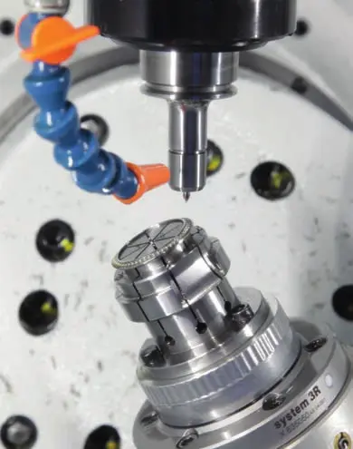
InterviewLe salon EPHJ-EPMT-SMT à Palexpo Genève du 12 au 15 juin 2018 – Paradis de l'innovation
Entretien avec Alexandre Catton, chef de projet du salon EPHJ-EPMT-SMT
Stettler Sapphire SA – Swiss level of perfection
Glaces de montres en saphir à Lyss
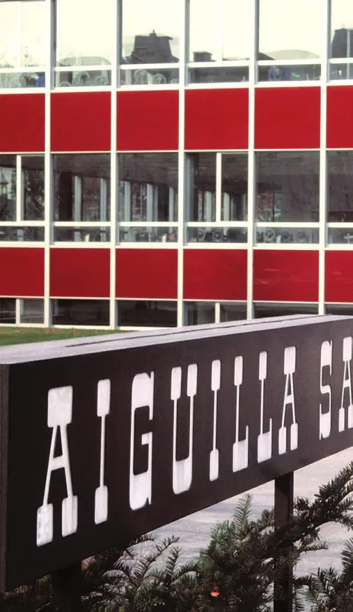
PublireportageAiguilla SA, seconde après seconde... Un maître du ballet des aiguilles
Aiguilla SA, second after second... Mastering the whirl of watch hands
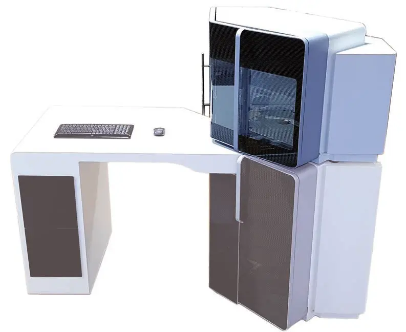
PublireportageDC Swiss SA – Une dynamique industrielle innovante / Nous outillons vos compétences
Factory5, Micro5, outils de taraudage et Safelock Technologies
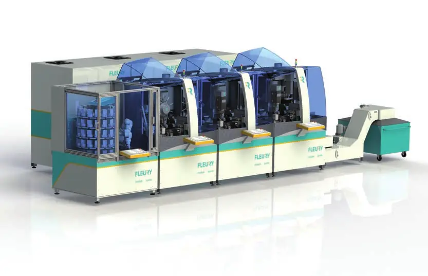
PublireportageFleury SA – Nouvelle évolution pour le modulo
Le centre d'usinage modulaire passe à cinq axes
Fleury Industries – Entreprise sous-traitante
Production d'ébauches sur machines modulo au Tessin

Griffes Consulting SA – Pour protéger votre créativité
Conseil en propriété intellectuelle à Genève
Guillod Gunther SA – Boîtes de montres et composants horlogers d'exception
Un fabricant de 150 ans repris par son équipe dirigeante
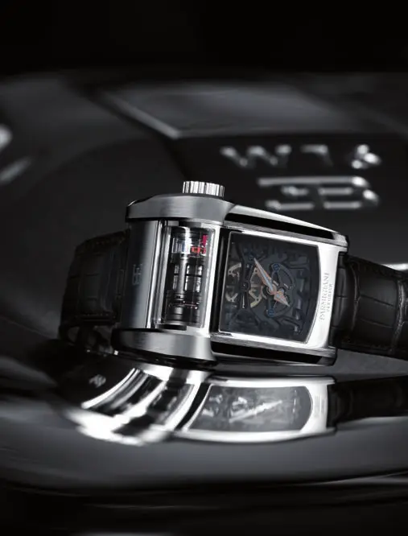
PublireportageLes Artisans Boîtiers SA – Un mariage de technicité et d'esthétique
Les Artisans Boîtiers SA – A marriage of technical skill and aesthetics
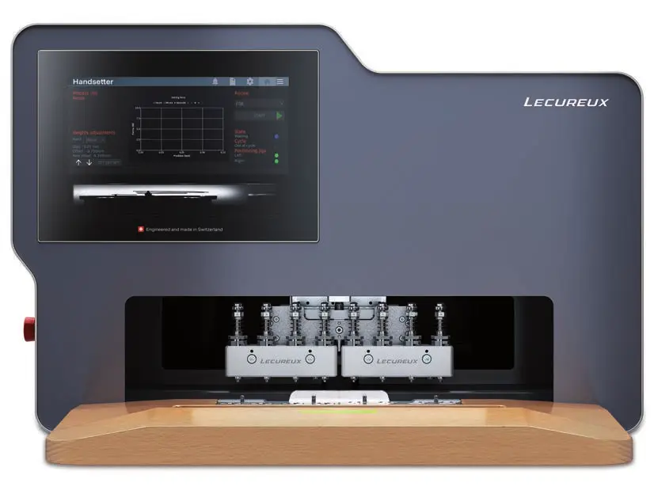
PublireportageLecureux – L'innovation au cœur du processus
Lecureux – Innovation at the core of the process
 Interview
InterviewMeyer Sintermetall – La métallurgie des poudres
Entretien avec Christoph Meyer
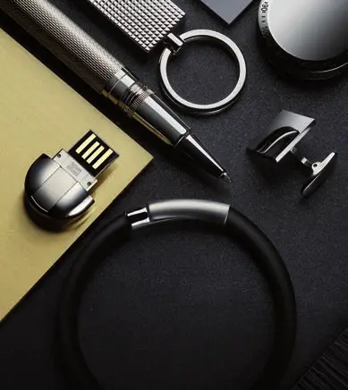
PublireportageManufacture de Haute Accessoirie – Un siècle au service du raffinement
Manufacture de Haute Accessoirie – A century of refinement
 Publireportage
PublireportageNGL Cleaning Technology SA – Un concept unique !
NGL Academy et Afterworks pour les 40 ans de l'entreprise
Sebal SA – Des produits 100 % suisses
Sebal SA – 100% Swiss products
Timsaph SA – Du saphir 100 % suisse
Timsaph SA – 100% Swiss sapphire
 Portrait
PortraitWOSTEP – Garant de la relève horlogère
Centre de formation et de perfectionnement horloger à Neuchâtel
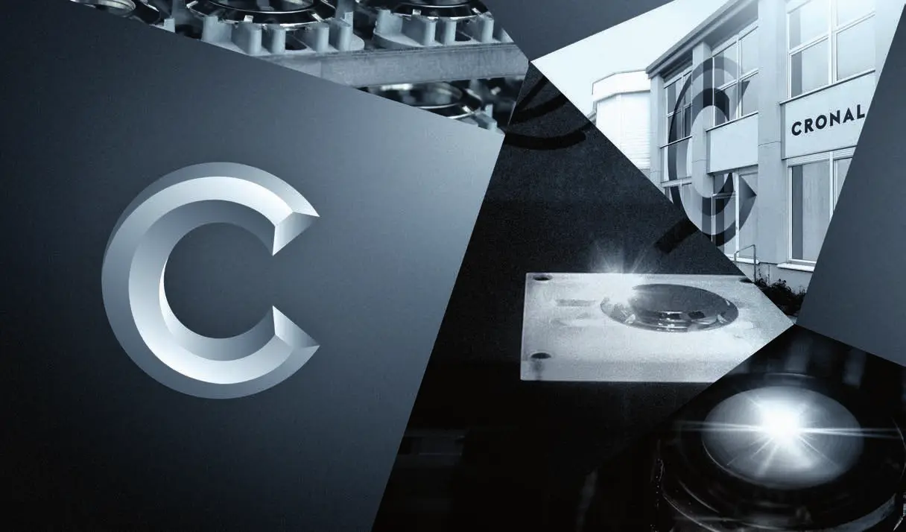
PublireportageCronal SA – Graveurs spécialistes en complication
Gravure chimique et laser de pièces d'habillage
Chatelain Prototypes Sàrl – Les spécialistes du prototypage
Prototypes, petites séries et potences pour l'horlogerie

Claude Piguet SA – Leader du polyuréthane
Une PME familiale de Grandson spécialiste du polyuréthane

CEFNA – Centre de formation neuchâtelois pour adultes – Innovation & expertise
Formations horlogères modulaires pour adultes
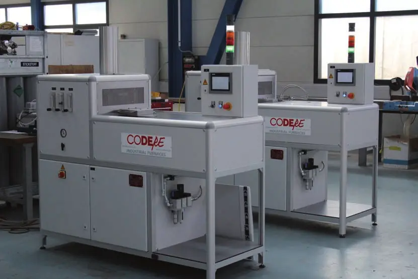
PublireportageCodere SA – Le spécialiste du traitement thermique
Codere SA – The heat treatment specialist
BECS Sàrl – Un service global pour le secteur horloger
BECS Sàrl – A global service for the watchmaking sector
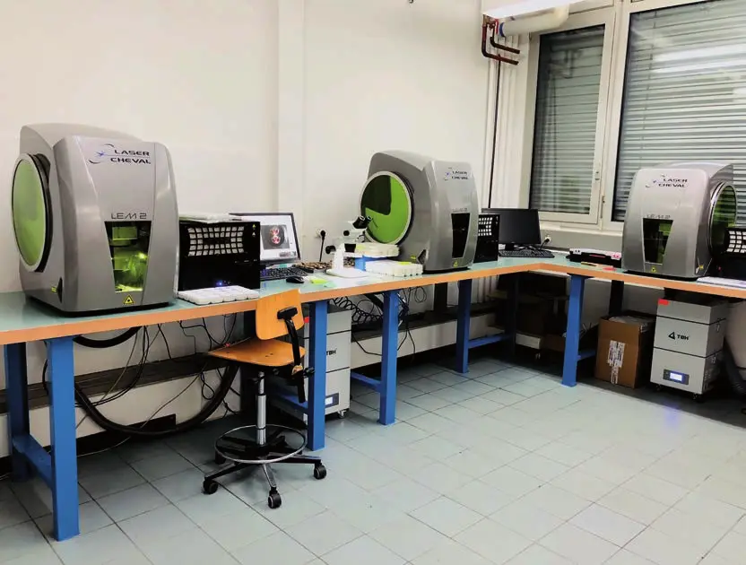
PublireportageDécotech SA – L'entrée dans l'âge du laser
Décoration de mouvements et galvanoplastie à La Chaux-de-Fonds
 Publireportage
PublireportageCyberis SA – La réactivité comme carte de visite
Décolletage de précision à Bassecourt
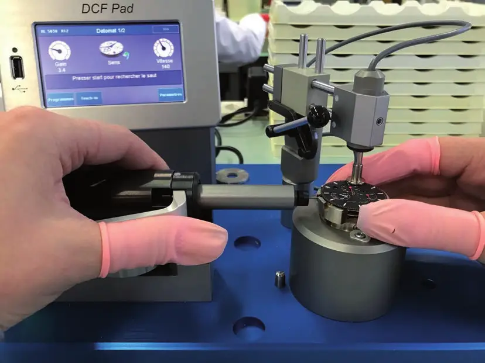
PublireportageGS Time Dongio – L'assistenza tecnica e la flessibilità come punti di forza
Assemblage de montres Swiss made au Tessin
Greub Machines SA – Pour trouver votre machine, neuve ou d'occasion
Greub Machines SA – Find your machine, new or second hand
Inhotec SA : l'usinage de précision au service des grandes marques horlogères
Nouveaux équipements et nouvelles prestations en 2017-2018
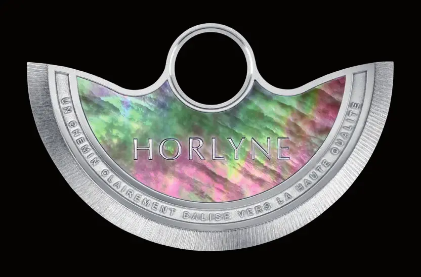
PublireportageHorlyne SA – Virtuose du décor en mouvement depuis 1978
Masses oscillantes, guillochage, gravure et sertissage
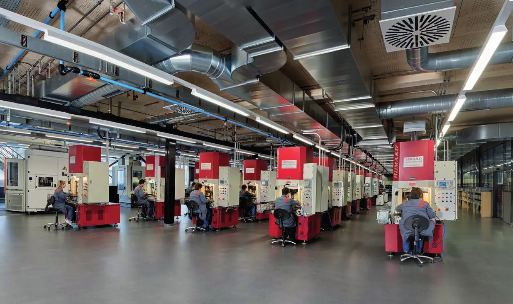
PublireportageJoseph Baume SA – L'expérience au service de l'étampage
Composants étampés pour l'habillage horloger au Noirmont
Ryf AG – Entretien avec Daniel Ryf, propriétaire et directeur
« Chez nous, la numérisation a commencé il y a plus de 20 ans »
La Pierrette SA – La référence en pierres d'horlogerie
Pierres en rubis et saphir pour les mouvements
Monnier SA, électroplastie et décoration – Un interlocuteur pour de multiples prestations
Galvanoplastie et décoration horlogère à La Chaux-de-Fonds
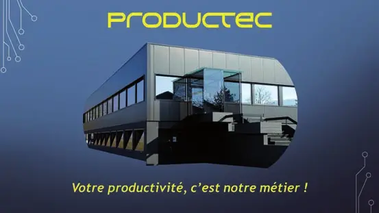
PublireportageProductec SA – Optimiser la chaîne numérique dans vos ateliers
Productec SA – Optimising the digital chain in your workshops
 Publireportage
PublireportageKIF Parechoc SA – De l'antichoc au décolletage de précision
Composants de mouvements mécaniques à la Vallée de Joux
Oesch GmbH – Boucles, fermoirs, barrettes et charnières en acier inox
Oesch GmbH – Buckles, clasps, spring bars and hinges in stainless steel
STL Swiss SA – Le spécialiste du bracelet métallique 100 % suisse
STL Swiss SA – The 100% Swiss metal strap specialist
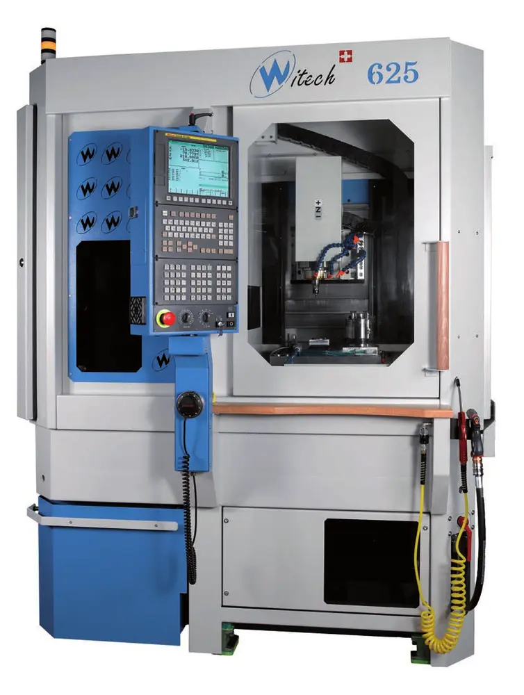
PublireportageWitech SA – Machines-outils compactes et précises
Machines d'usinage de un à cinq axes à Bassecourt
Transcendance Sàrl – Les jeunes artisans de la décoration
Décoration horlogère haut de gamme au Sentier
 Publireportage
PublireportageBroquet Décolletage SA – Le spécialiste du décolletage d'horlogerie haut de gamme
Micropièces décolletées à Bévilard
PublireportageBeauregard Manufacture SA – L'expérience et de vastes compétences au service de l'horlogerie
Boîtes de montres en métaux précieux et composants
Giroud SA – Précieux auxiliaires pour l'horlogerie et l'industrie des machines
Tables coulissantes de précision et potences de chassage
Joseph Bonvallat SA – Votre partenaire depuis 1937
Galvanoplastie, décoration et polissage à Porrentruy
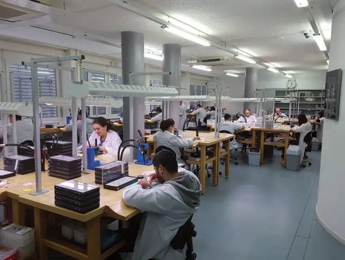
PublireportageBryek Horlogerie Sàrl – Un spécialiste du terminage T2
Assemblage de montres mécaniques et à quartz
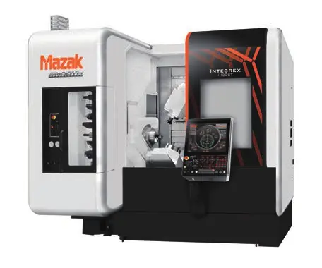
PublireportageWenk SA – Le spécialiste des machines-outils
Importation, vente et service de machines-outils CNC
Entreprises de ce numéro · 47

Aiguilla SA
Fabrication d’aiguilles de montres
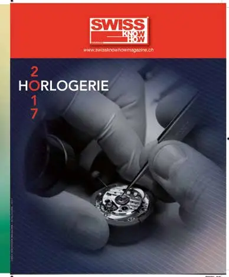
Baselworld
Salon horloger et bijoutier
Beauregard Manufacture SA
Habillage horloger et bracelets métal
BECS Sàrl
Bureau d’études et outillages horlogers

Broquet Décolletage SA
Décolletage de précision
Bryek Horlogerie Sàrl
Assemblage de montres et terminage T2

CEFNA – Centre de formation neuchâtelois pour adultes
Formation professionnelle pour adultes

Chatelain Prototypes
Outillage horloger (potences, assistance au sertissage)

Claude Piguet SA
Pièces en polyuréthane et usinage métal

Codere SA
Fours industriels pour le traitement thermique
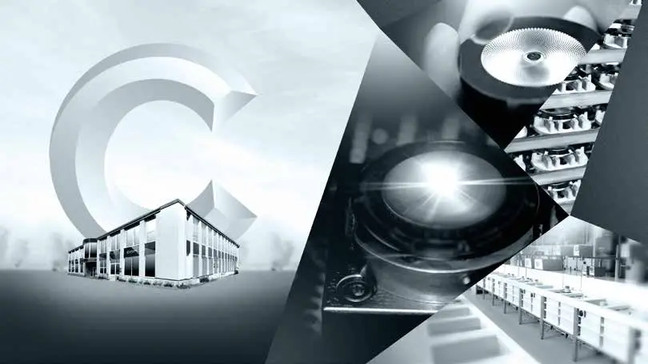
Cronal SA
Gravure de haute précision

Cyberis
Barrettes de bracelets haut de gamme
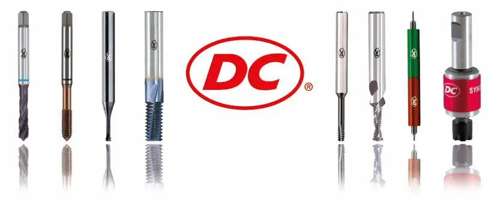
DC Swiss SA
Outillage (marque Nano Tools)
Décotech SA
Décoration de mouvements horlogers

Dreyfus & Associés

EPHJ – Salon international de la haute précision
Salon professionnel

Fédération de l'industrie horlogère suisse FH
Association faîtière de l'industrie horlogère

Fleury SA
Lignes de transfert modulaires et sous-traitance d'ébauches

Fondation WOSTEP
Formation et perfectionnement horloger
Giroud mécanique de précision SA
Tables coulissantes de précision et potences de chassage
Greub Machines SA
Commerce de machines neuves et d'occasion
Griffes Consulting SA
Conseil en propriété intellectuelle
GS Time Sagl
Assemblage de montres Swiss made
Guillod Gunther SA
Boîtes de montres et composants horlogers
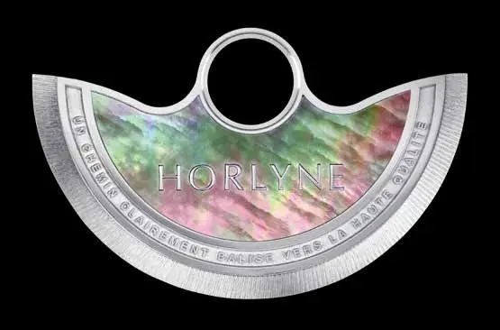
Horlyne SA
Masses oscillantes et décoration horlogère
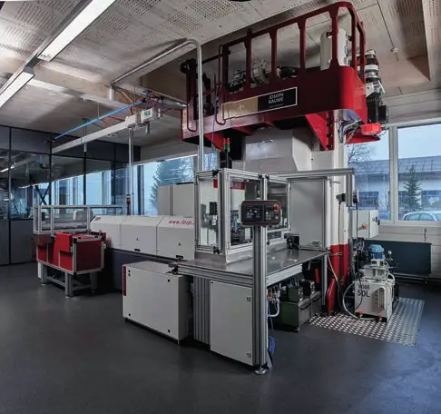
Incabloc SA
Amortisseurs de chocs et composants horlogers

Inhotec SA
Composants et ébauches horlogers
Joseph Baume SA
Étampage de composants d'habillage
Joseph Bonvallat SA
Galvanoplastie, décoration et polissage
KIF Parechoc SA
Antichocs, raquetterie et décolletage de précision
La Pierrette SA
Pierres d'horlogerie
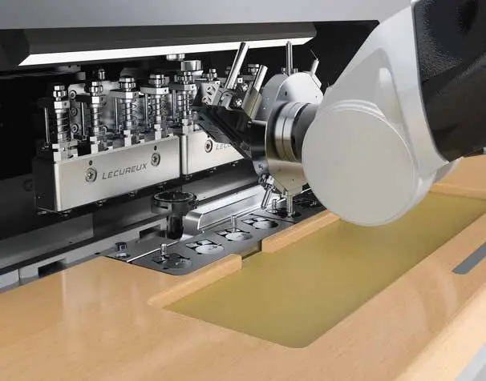
Lécureux SA
Instruments de précision et automation horlogère
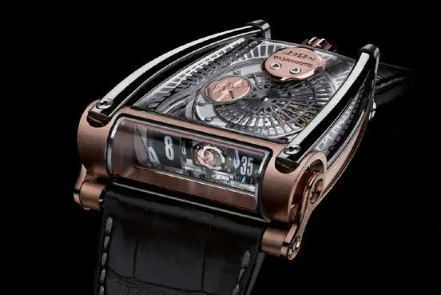
Les Artisans Boîtiers SA
Boîtes de montres très haut de gamme
Manufacture de Haute Accessoirie (MHA) – Niklaus-LNI SA
Accessoires de luxe en private label
Meyer Sintermetall AG
Métallurgie des poudres et métal lourd fritté
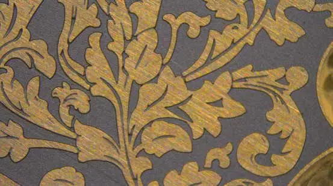
Monnier SA
Électroplastie et décoration horlogère
NGL Cleaning Technology SA
Produits de nettoyage industriel à base aqueuse

Oesch GmbH
Distribution d'accessoires métalliques pour bracelets cuir et écrins
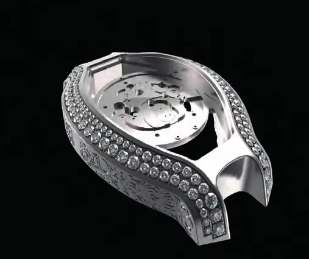
Productec SA
Logiciels CFAO et programmation CNC

Ryf AG
Microscopie industrielle et systèmes de mesure
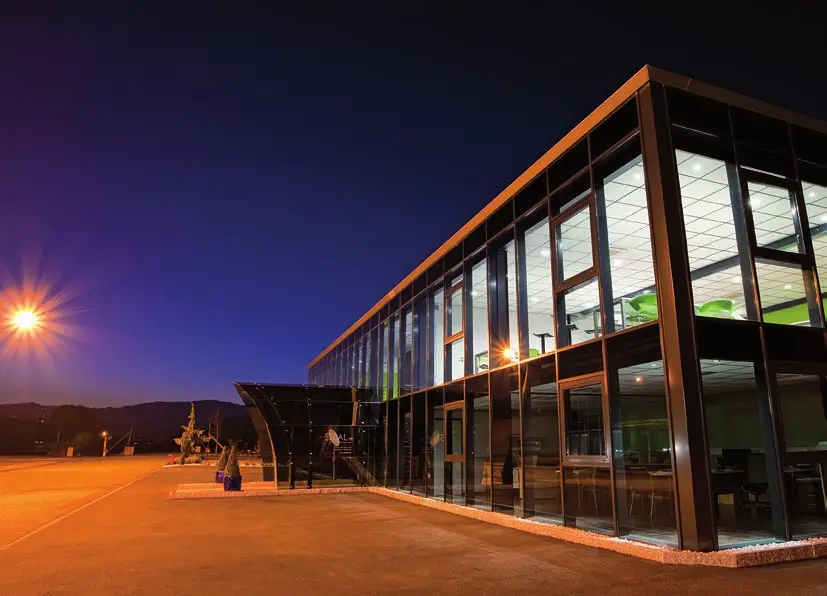
Sebal SA
Verres de montres en saphir

Stettler Sapphire AG
Composants techniques en saphir et glaces de montres
STL Swiss SA
Bracelets et boucles métalliques haut de gamme

Timsaph SA
Production de saphir synthétique
Transcendance Sàrl
Décoration horlogère haut de gamme
Wenk SA
Importation et service de machines-outils

Witech SA
Machines-outils compactes
Aucun résultat.